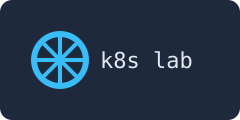

This page comes from the host directory, mounted into the pod.
Edit site/index.html, then reload. Nothing is restarted.
site/index.html
The image below is served from the same directory, through the same nginx:

Generated at: replace-me-by-hand
replace-me-by-hand